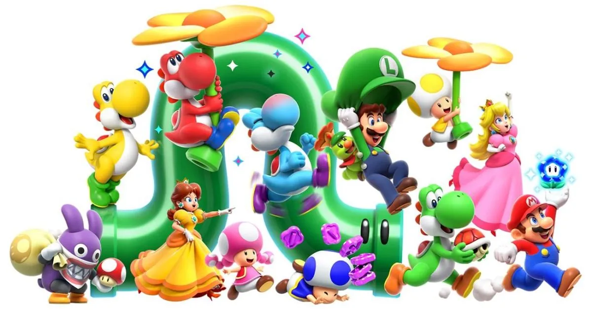

Okay so like, Super Mario Wonder is a good game
I've just been playing Super Mario Wonder on my switch since it came out. Honestly the only way I can describe it is just: Pleasant. It's really Pleasant, from the music, to the levels, the game is just a lovely time. But I find myself in the frustating position because I really want to talk to people about it. But I can't, because I'd spoiler the surprise and wonder of playing the game. Each level is a treat to explore because of the Wonder Flowers, and they make all the levels exicting to play just because you don't know what to expect.
So like I'm sittin' there in my discord call. Wanting to tell my friends why they should play Super Mario Wonder. But if I explain to them why it'll ruin some of the magic. So instead I have to think to myself how to discreetly nudge them in that direction without revealing the hand, So to speak. It's just been a big challenge, however that obviously hasn't stopped me from enjoying the game. I didn't mean to imply that, sorry. No no, I'm sor- I'm sorry. No listen I'M SORRY, you don't have to appologize I'm sorry here. Sorry, I got off topic what was I talking about? Oh yeah, Super Mario Wonder, uhhhhhh.... Talking Flowers, Multipler Features. Click below for more. Or leave.